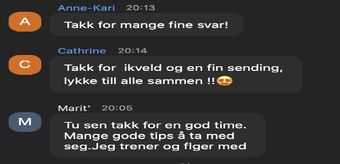
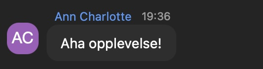
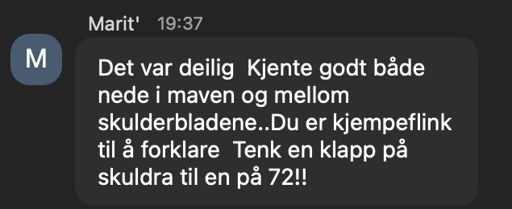

Hei {{contact.first_name}}.
I morges fortalte jeg deg om alt som skjer i HYPO GOLD hver måned.
Her er noen tilbakemeldinger fra noen som har hatt god nytte av HYPO GOLD:
Inger, mamma og bestemor
"Jeg hadde gått og holdt inn magen i 25 år og skuldrene var klistret til ørene. Videoene i HYPO GOLD hjalp meg å holde motivasjonen oppe, og sendingene med Sadie og teamet ga meg det fellesskapet jeg trengte. Min favoritt er fellestrening når jeg kan skru på kamera og få direkte tilbakemelding. Takk for at jeg kan gå tur uten smerter og uten å være redd for å tisse på meg!"
Marte
"Etter 12 uker med kurset forstod jeg at kroppen trengte mer tid. HYPO GOLD er det som har hjulpet meg å møte opp og gjøre jobben. Sendingene gir meg følelsen av å ikke være alene, og jeg kan booke spørretimer med PRO Trener når jeg vil - uten ekstra kostnad! Mindre nedpress, ingen lekkasjer, og magen bular ikke lenger. Jeg fortsetter så lenge jeg blir sterkere."
Noen meldinger fra nylige sendinger:



Gi deg selv en ny sjanse, du har fortsatt mulighet til å få dette tidsbegrensede tilbudet nå.
Sjekk det ut her!
Om du ønsker det, kan du også bli med på LIVE felles oppstart og restarte mailene som tar deg gjennom kurset uke for uke. På denne måten starter du helt på nytt, og kan bare la det du ikke fikk til sist, være og fokusere på det du SKAL få til denne gangen, med full støtte fra meg og teamet! 🙂
Når du velger HYPO GOLD-medlemskapet som passer deg best, blir du oppgradert til å ha tilgang til den nyeste versjonen av Grunnkurset + får full tilgang til alt av HYPO GOLD innhold! Og - når du velger års-alternativet får du også en privattime med PRO-trener verdi 1050kr på kjøpet! Da får du den samme verdien som om du hadde kjøpt kurset på nytt, med støtte fra a-å slik at du lykkes denne gangen, og til en brøkdel av prisen!
Velg mellom:
💪6 måneder for kun 2500,- (spar 1094,-)
💪Eller 1 år for 4000,- (spar 3188,-) privattime inkludert som BONUS!
Klem til deg,
Sadie
Sadie Lawler Skaperen av Hypopressiv trening Norge metoden |